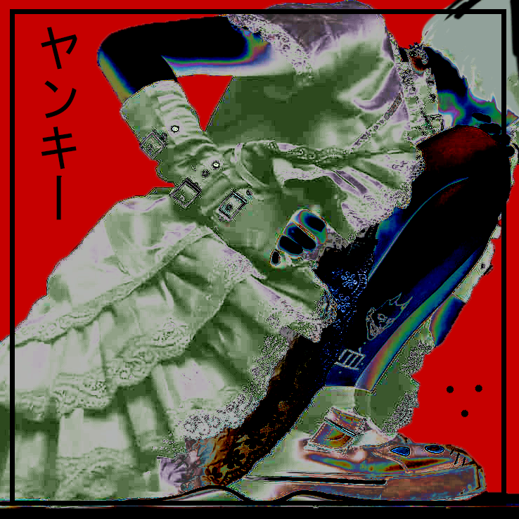
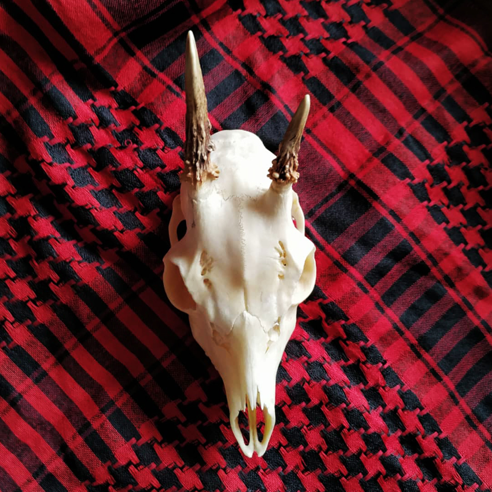

秋思
Le coeur, L'organe de l'Attachement.
どきどき
単数 • SINGULIER
Dans le fond, on est tous pareil,
Sous le ciel ébène,
On s'croise,
On s'pose des questions,
Sans savoir si c'est les bonnes,
Profite de la nuit si elle est belle...
Quelques angoisses à noyer,
Le jour se lève,
Les chiens s'mettent à aboyer.
Le monde que j'avais vu en rêve
se referme.
L'amertume de mes nuits, Melancholia
Rouge terni, déteint sur mes bras.
Un brouillard épais prend possession de mon esprit.
Toute la douceur que j'ai pour toi,
se change en épines qui me rentrent dans
la gorge.
La chasse au Lapin
Le chasseur chassé
NEW PROJECT
NEW PROJECT
NEW PROJECT
⇩ ⇩ ⇩
☢ web.museum ☢
Capreolus capreolus
L'enfant des rues.
Erre dans les rues de Bruxelles...
Encre sur son passage, les murs sales de la ville
Eveille les consciences

Le chaos est dans l'oeil de celui qui regarde.
Le monde et l'univers sont en parfait équilibre entre ordre et harmonie.
Alors serait-ce l'humain qui serait responsable de la corruption de ce monde ?

L'être humain est bruyant.
Mais l'être qui vit dans ma tête l'est encore plus.
"Optimisme, pessimisme.
Mentir ou dire la vérité.
Tourner à gauche ou à droite.
Faire comme les autres, être différent.
Manger ou pas manger.
Faire des choix.
Décider de sa vie.
Soyez pas des moutons, pensez par vous-même."
血墨

Ton crâne ensanglanté
Dans mes mains
Gise ta tête
オレは撮ったんだ！